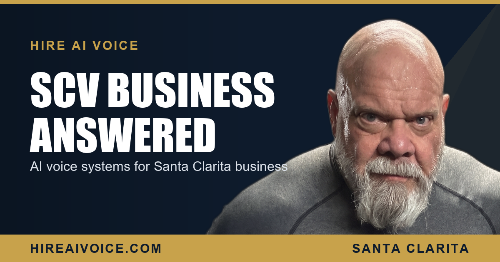

AI Voice Systems for Santa Clarita Valley Businesses

The Short Version
- An AI voice system answers every call for your Santa Clarita business 24/7, books the job, and follows up automatically.
- The Santa Clarita Valley is packed with competitive home-service businesses. The ones that answer every call are the ones that win.
- Local matters here. Valencia, Saugus, Canyon Country, Newhall, Stevenson Ranch, and Castaic homeowners hire businesses that feel like neighbors, not call centers.
- It is 297 dollars or 497 dollars per month, no contracts, live in about 72 hours, built by a 27-year SCV local.
What Is an AI Voice System for a Santa Clarita Business?
An AI voice system is a 24/7 voice agent that answers every call for your Santa Clarita business, greets the caller by your business name, answers their questions, qualifies the lead, books the appointment, and follows up automatically. It does this whether you are on a job in Valencia, driving up Sierra Highway, or asleep at midnight. No call across the Santa Clarita Valley goes to voicemail, and no lead waits.
I have lived and worked in the Santa Clarita Valley for 27 years. I have watched good local businesses lose jobs they should have won, not because they were too expensive or did bad work, but because a real customer called and nobody could pick up. That is the gap an AI voice system closes, and in a market as competitive as ours, it is the difference between booked and lost.
Why Does Local Matter for an SCV Answering Service?
Because Santa Clarita runs on local trust. This is not Los Angeles proper. It is a valley of connected neighborhoods where word travels fast and people want to feel like the business they hire actually knows their area. A homeowner in Stevenson Ranch with a flooded laundry room is not impressed by an out-of-state call center reading a script. They want someone who answers with the business name, sounds like they belong here, and books the job now.
In Santa Clarita, the business that answers first and sounds local is the business that gets the job.
That is the whole point of building this local-first. An AI voice system tuned for the SCV answers instantly, in your business name, and books the appointment, while the generic voicemail down the street sends the caller straight to your competitor. From Castaic to Canyon Country, the businesses that win are the ones a customer can always reach.
What Kinds of Santa Clarita Businesses Use This?
The home-service and local businesses that live and die by the phone. HVAC companies slammed every summer when Saugus hits triple digits. Plumbers, electricians, and roofers booked solid and missing calls all day. Landscapers, pool techs, pest control, garage door crews. Dental and medical offices, auto repair shops, med spas. If your business takes calls in the Santa Clarita Valley and loses jobs when nobody can answer, this is built for you.
Think about a typical busy day in the valley. The calls come in while you are doing the exact work that earns the money. You cannot be under a sink in Newhall and answer the phone at the same time. So the call rolls to voicemail, the customer hangs up, and they dial the next name on the list. The job was never lost on price. It was lost on a phone nobody could pick up.
How Does the AI Voice System Win Those Jobs?
It answers every inbound call the instant it rings, in your business name. The customer with the dead AC at 9 PM in Canyon Country does not get your voicemail. They get a warm, instant conversation, real answers, and a booked appointment, while your competitor's phone is still ringing into the void. Your effective response time drops to zero, and that is the lever that decides the whole game.
It also follows up. If a lead does not book on the first call, the system keeps the thread alive so the lead stays warm instead of going cold. This is exactly why so many SCV businesses are switching their phones to AI, and it is the same speed advantage I broke down in speed to lead across Los Angeles County. The valley is competitive. The phone is where it is won.
What Does It Cost and How Fast Can It Go Live?
It is 297 dollars per month for the core plan and 497 dollars per month for the full plan, with no contracts. Setup takes about 72 hours, so a Santa Clarita business that signs up today can have every call answered, every lead booked, and every miss followed up by the end of the week. No long onboarding, no software to learn, no risk of being locked in.
Compare that to the cost of a single missed job. One booked HVAC install or one new patient covers the monthly fee many times over. The math is not close. The AI voice system pays for itself the first time it catches a call you would have lost. For more on how an AI receptionist that never sleeps handles a real SCV business, that is the whole system in one place.
What to Do This Week
You do not need a bigger ad budget. You need to stop leaking the calls you already get. Three moves:
1. Count your misses. For one week, track how many calls you answer live versus how many roll to voicemail. The number will surprise you, and it is your hidden revenue leak right here in the valley.
2. Put a 24/7 answer in place. An AI voice system that picks up every call and books the appointment turns your worst response times into your best ones, overnight.
3. Let it follow up, so no Santa Clarita lead ever goes cold.
The businesses winning across Valencia, Saugus, Canyon Country, Newhall, Stevenson Ranch, and Castaic are not the ones with the flashiest ads. They are the ones who answer first. That is the lever. Pull it.
Answer Every Santa Clarita Call
Our AI voice agent answers every call 24/7, books the job, and follows up automatically. Live in 72 hours. $297/month, no contracts. Or call Sarah, our live agent, and hear it yourself.